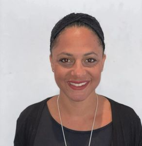
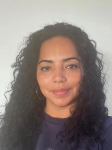
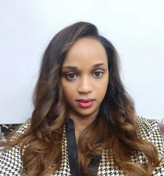
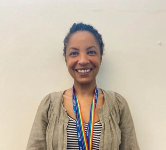

Meet Our Team
LIZ SOPER - FOUNDER/ ADVOCATE
Our vision as a community is to change outcomes for our children and support them to thrive not just survive education. Founder Liz Soper driven by her and her child's own lived experiences navigating education and SEN systems, started to advocate for other children and families in 2017. She is a Brighton and Hove Autism champion and has a long history in many aspects of childcare, has help raise a number children over the years and has a special interest in early years , care experienced children and primary education. She has gained training in counselling, and with the PDA society and P.A.S.T (Positive Autism Support Training). She is passionate about learning from actually autistic/neurodivergent advocates and academic professionals in relevant fields. She has organised talks, taken part as a speaker and has collaborated with many other organisers and support groups including: (BME lead) mASCot, Venessa Bobb, founder of A2nd voice, Lambeth Autism Group and member of the APPG on Autism, and Dr Muna Abdi from Decolonising Education. Liz has consulted for Can Can Campaigns on their NEU proposal on the impact of poverty, class structural racism on education, and for Brighton and Hove's Parent Carer Council around neuro-developmental pathways and BME communities.
CATHY GIMPEL - COMMUNITY OUTREACH
Cathy is a primary school teacher with an MA in education. She has a strong interest in success despite adversity and has worked as an INA, a Teaching assistant and in a number of placements in many of our cities schools. Cathy has experience on a personal level and as a professional of advising, assisting, supporting and motivating young people in developing skills and attitudes which will assist them in achieving and sustaining their academic and their personal goals. Cathy is a connected community member with a wealth of life experience that gives her a unique confidence, understanding and knowledge of local challenges for children and young people and their parents/carers.
ZITHA NDAMUKUNDA - COMMUNITY SUPPORT WORKER
Zitha was the founder of ASAP (Autism Support and awareness Promotions) and the first black parent representative for PaCC in 2018. She grew up in Rwanda at a time of great conflict (Rwandan genocide) alongside her sibbling with special needs. She is familiar with society struggles and stigma's especially when there is a lack of awareness around Autism and SEND. After moving to the UK 8 years ago she could see struggles again within communities including a lack of understanding, language barriers and stigma with regards SEND.(Special Educational Needs and Disabilities). Currently Zitha is studying/training as an Occupational therapist and is looking to serve her community even more as a professional.
She has valuable lived experience and is hoping we can bring change by raising awareness amongst our communities and improve cultural awareness within organisations, settings and services
KATE JORDAN -EDUCATOR & CHILDREN'S CHAMPION
Kate is passionate about all aspects of Education. She has a keen interest in developing her understanding of Child Psychology and feels fortunate to be currently working with students who have significant barriers to learning. Kate is a qualified Design and Technology teacher and is working as a learning mentor at a secondary school where she is also the staff governor. "Our catchphrase is ‘One Team, One Dream" and she believes the way to do this is to have open and honest conversations about everything and nothing.
Kate is a member of BHECC- Brighton & Hove Educators of Colour Collective and in school, a member of EDIT- Equality, Diversity & Inclusion Team. We promote excellent Anti-Racist practice and support our students of colour and each other.
She is active in the National Education Union and holds the position of Equalities Officer on the Brighton & Hove District Committee.
Kate hopes to bring her wealth of experience to ASATT and firmly believes in our collectives shared view that every child counts and every child must have an equal opportunity to thrive in life . She hopes though building positive relationships with young people, together, we work out how to overcome those barriers, how to manage and express emotions healthily and ultimately, to develop a life long love of learning.